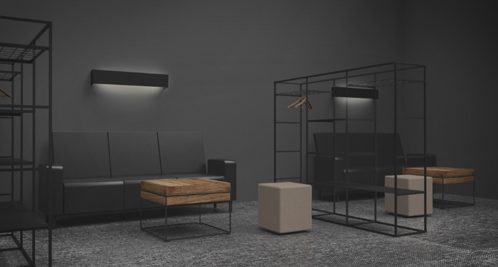
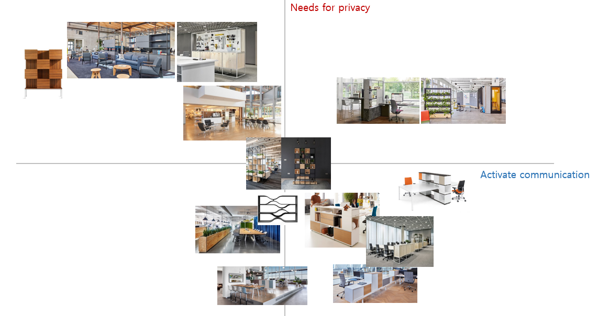

Flexi-Modular Shelf
The Flexi-Modular Shelf is a versatile solution addressing two key requirements: providing privacy for employees and fostering communication within teams. Its modular design adapts to various office needs, creating functional spaces for both individual focus and collaborative interaction.
With its customizable configurations, the shelf helps balance visual barriers for privacy while offering open sections that encourage team engagement and accessibility.
Impact: The Flexi-Modular Shelf supports productive environments by accommodating diverse needs, from reducing distractions to promoting seamless communication.
This project was my personal project. I conducted market research, user interviews, and needs analysis to identify key office requirements. Using this data, I developed 3D models in Rhino and iteratively refined the design based on feedback.
Millennial and Gen Z Office Employees
Modular design adaptable to various office layouts
1 months
Employees highlighted the importance of maintaining visual and auditory privacy to minimize distractions. Many expressed a preference for barriers that shield their workspaces without making them feel isolated or confined.
💡 Solution: The modular panels offer adjustable privacy screens, allowing users to customize their workspace while maintaining an open and airy feel. These screens can be repositioned or removed as needed.
Managers and team leaders emphasized the necessity of fostering open communication and collaboration. The challenge was to design a system that supports spontaneous interactions without compromising the workspace's functionality.
💡 Solution: The shelf design incorporates open sections that allow for easy visual and verbal interaction, creating opportunities for spontaneous collaboration and teamwork.
Modern offices often require furniture that can adapt to various layouts and purposes, from individual workspaces to collaborative zones. Employees expressed the need for flexible solutions that fit evolving office environments.
💡 Solution: The modular shelf system is designed to be highly adaptable, with components that can be reconfigured to suit different needs. Whether used as dividers, storage units, or collaborative hubs, the system provides versatility in office settings.
The rise of "Work Smart" principles highlights the growing demand for spaces that balance productivity and employee well-being. Open-plan offices are increasingly popular, yet they present challenges such as noise and privacy concerns. Trends show a shift towards modular and flexible office designs that allow customization based on specific needs.

To design a solution that addresses the challenges of modern office environments, I conducted in-depth
interviews with employees and managers. The goal was to uncover specific needs
and pain points related to workspace design.
These interviews provided valuable insights into designing a modular system that addresses both privacy and collaboration needs effectively.
The Flexi-Modular Shelf is designed to adapt seamlessly to diverse office environments, serving multiple functions depending on the needs of the space. It can act as a display storage unit, a collaborative hub when tables are joined for meetings, or function independently in quiet zones. The back of the unit doubles as a board or bookshelf, while a whiteboard can be mounted in front of monitors for brainstorming sessions.
The central frame supports a monitor, with additional boards that can be hung on both the front and back frames for enhanced usability. When used independently, the lower storage unit extends slightly beyond the monitor, creating a convenient surface for placing a keyboard and mouse. The closed storage compartments provide space for essential meeting tools such as keyboards, mice, and laptops, ensuring a clutter-free workspace.